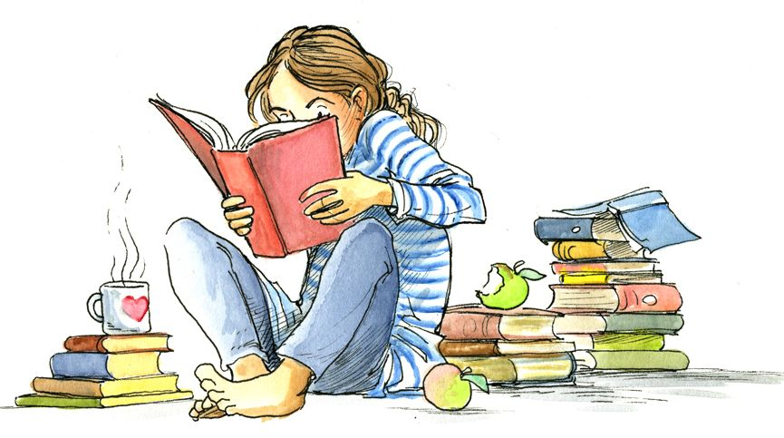
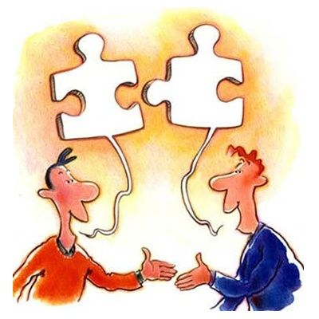
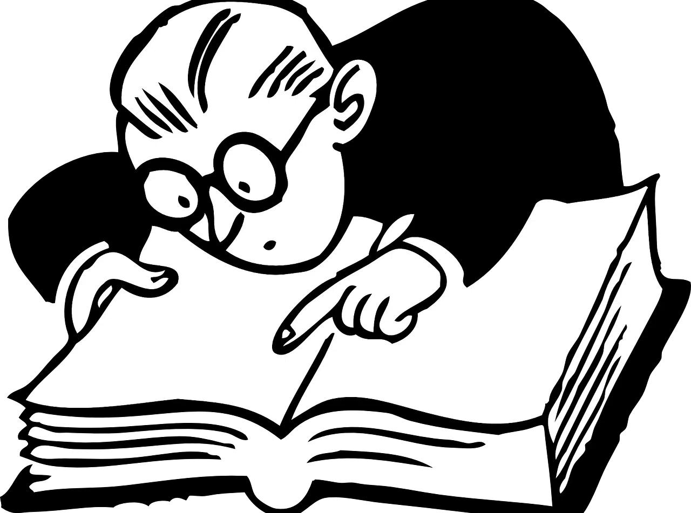

Lectura
La lectura es el proceso de comprender la información escrita, que puede incluir letras, palabras, números o símbolos. Implica la interpretación y decodificación de un mensaje transmitido a través de un código, generalmente un lenguaje visual o escrito
Escritura
La palabra "escritura" se refiere a un sistema de comunicación humana que utiliza signos visuales para representar el lenguaje hablado. Es un proceso de representar visualmente las palabras y pensamientos a través de la grafía. La escritura también puede referirse a un documento escrito, como una carta o un contrato
Expresión Oral
La expresión oral se refiere a la capacidad de comunicarse de forma clara y efectiva a través del habla, utilizando palabras y gestos para transmitir ideas, pensamientos y emociones. Es una habilidad esencial para la interacción social, la comunicación profesional y la enseñanza.
Gramática
La gramática es el estudio de las reglas que rigen la estructura y el uso de las palabras en una lengua, incluyendo la formación de palabras, la organización de oraciones y la concordancia entre ellas. En esencia, es el sistema de reglas que permite hablar y escribir correctamente una lengua.
